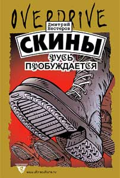

Дмитрий Нестеров • Скины: Русь пробуждается • overdrive • 31.07.2003

Первый роман молодого московского прозаика Дмитрия Нестерова посвящен быту, будням и мировоззрению скинов – агрессивной городской субкультуры «бритоголовых», посвятивших себя идеям «очищения арийской расы» и «восстановления имперской гордости». Автор знает мир неонацистов не понаслышке и убедительно показывает как психологический портрет отечественного «скина», так и социальные причины, приводящие молодого человека к такой форме протеста против современного мира.
P. S. Книга запрещена решением Ленинского районного суда города Оренбурга от 26.07.2010 и решением Никулинского районного суда города Москвы от 24.05.2012 (запись в «Федеральном списке экстремистских материалов» министерства юстиции РФ №1482), а также решением Ленинского районного суда г. Екатеринбурга Свердловской области от 22.03.2016 (запись № 3746 в том же списке). См. на сайте минюста.
Пресса
Е. Лесин. Петля Нестерова (Exlibris)
Когда насилие врывается в ваш дом, оно громко кричит: “Я – насилие!” Когда тихо входит ложь, она говорит: “Здравствуйте, я – правда”. Трудно сказать, что хуже. Фашистская Германия – насилие. Коммунистический Советский Союз – ложь. СССР победил Германию в войне. И поделом. Откуда же берутся доморощенные (в буквальном смысле слова – дома рощенные) фашисты?
Россия – женский род, Германия тоже. Правильно, что перегрызлись. Но Израиль-то – мужской. Значит, детей рожать надо. Единственная страна, куда гонимые евреи бежали со всего мира, – Россия. Откуда же в России берутся скины?
Ответ простой: с проклятого Запада.Национализм – антирусское явление. Славянофилы не были националистами, тем более нацистами. Итальянцы изобрели фашизм, немцы – нацизм. Зачем же нам петь под чужую, нерусскую дудку? Нет ответа.
Дмитрий Нестеров – молодой человек. Очень хороший писатель. Если читать его книгу как роман – а он и заявлен как роман, – то чтение совершенно классное. Стогов отдыхает. Потому что Стогов скучный, да еще и ленинградец. Нестеров пишет о Москве. О том, как ее топчут бритоголовые и очищают от кавказцев и чернокожих. “Мы ниггеров повесим! / Мы вырежем хачей! / Россия для русских / Москва для москвичей” – кричат скины, противореча сами себе. Откуда ж в Москве русские? Столица – любая столица – всегда место проживания детей разных народов. Немцев, итальянцев, африканцев (самый известный – Пушкин), кавказцев и всех прочих. И все – москвичи.
Так что последняя строчка – для рифмы. Кстати, насчет рифмы и иных художеств. Какими мы видим скинов? Тупыми и бритыми. Два класса образования и пиво “Клинское”. Это не так. Дмитрий Нестеров (и его лирический герой Дмитрий Никодимов) – человек образованный. Персонаж, то есть Никодимов, и вовсе очень любит Швейка. Любой, кто не просто любит, а хотя бы дочитал до конца книгу чеха Гашека о Швейке (кстати, как звали бравого солдата? Вот-вот: так же, как Бродского), не способен “мочить” кавказцев. Потому что Швейк – современный Дон Кихот. Среди скинов донкихотов нет.
Роман Нестерова написан “изнутри”, полагаю, автор как-то, но был связан со скинами. Написав книгу, построенную, кстати, очень профессионально, он скинхедом быть перестал. Перерос.
Но “новым радикалом” остался. Сейчас много таких писателей. Все молодые, все злые. Но еще и образованные, умненькие и чаще всего сытые. Зачем им книги? Зачем литература?
Литература ведь как патриотизм – последнее прибежище негодяев. Опять-таки в прямом смысле слова. Негодяй – то есть не годяй. Тот, кто не годен. Тот, кто никуда не годен, идет в писатели.
“Русь пробуждается” – очень современный и очень, как говорил Ильич, своевременный роман. Двадцать первый век – век “мочилова” и радикалов. Примерно как девятнадцатый. “Мочилова”, антиглобализма и “гринписовщины”. В романе ведь два главных героя. Дмитрий, он же Квас – давит ниггеров и хачей, в конце (это не просто счастливый конец, а именно хеппи энд, ибо роман совершенно “западный” – и по идеологии, и по форме) вступает в Организацию. И второй главный герой. Кошка. Животное. Кошка, которая в конце, конечно, гибнет. “Квас присел у ямы на землю, откупорил пиво и закурил. Вот и все. Отныне кошки у них уже нет… ”
Очень хороший роман. И правильно, что про скинов. Нам с ними еще жить. Целый век.
Marcus Polaris. Рецензия на книгу «Скины» (rus.delfi.lv)
Новый роман в экстремальной литературной серии “Overdrive” издательства “Ультра.Культура”. На первый взгляд может показаться, что книга скандальная и провокационная, поскольку рассказывает о жизни русских неофашистов — скинхэдов. На самом деле, роман Нестерова вовсе не похож на “экстрим” в духе Стюарта Хоума. В нем нет никаких фантасмагорий и претензий на неофашистскую антиутопию.
“Скины” — на 100% реалистическое повествование о дворовых московских скинхэдах, об их идеологии, образе жизни, акциях и т.д. Главный герой — молодой скин по прозвищу Квас. Он из нормальной интеллигентной семьи, небогатой, но и никоим образом не люмпенской.
Родители, конечно, в ужасе от увлечения сына фашистскими штучками, однако, в принципе, давно махнули на это дело рукой и оставили мысли о его перевоспитании. “Скинхэдовской” организацией (подразделением) в котором состоит Квас, руководит умный стратег по имени Роммель, который тщательно планирует акции по избиению негрв и кавказцев, а также вырабатывает план борьбы с другими молодежными группами “на районе”, которым не нравится фашистская деятельность скинов.
Впрочем, ненависть этих группировок к скинам имеет, скорее, не идеологическую, а масс-культурную подоплеку. Главные молодежные враги неофашистов — рэпера. И с ними битвы происходят очень серьезные. А еще — менты, “азеры”… словом, врагов хватает. Вообще, книга Нестерова напомнила мне “Гопников” и “Школу” Козлова, которые недавно вышли в другом “альтернативном издательстве” “Ad Marginem”.
Там речь шла о молодежи начала-середины 80-х. В ситуации, которую описывает Нестеров, изменены только декорации. Фашистская идеология нашла благодатну. почву в “районах” мегаполиса. Молодым ребятам, “простым” парням, некуда девать энергию и ярость от осознания собственной ненужности в мире волчьих законов капитализма.
Они естественным образом превращаются в “псов городских окраин”, о которых пел Шахрин и “Чай-ф” в середине 90-х: “Они сбиваются в стаи/еще не зная, что делать/может просто полают/а может, кого-то заденут… И все у них в порядке/есть кобеля, есть суки/первые ходят на бл*дки/вторые рожают в муках — а в этом месте по- другому не прожить!” Вот только “псы” ХХI века уже ЗНАЮТ, что ДЕЛАТЬ — “мочить” черных во имя Святой Руси, а на “Зиг” отвечать “Хайль”! Все очень серьезно. Слишком дорого обошлись человечеству уроки мюнхенских пивных.
Владимир Иткин. Рецензия на книгу «Скины» (Книжная витрина)
Очередные записки из подполья, изданные Ильей Кормильцевым в серии “Overdrive”, живописуют революционные будни московских скинхедов. Это вполне адекватная нацистская брошюра, в ожидании общественного резонанса разросшаяся в роман.
Сентиментальные воспоминания о том, как упоительно мочить насмерть азербайджанцев и негров. Как дивно пробить телом помертвевшей от страха жертвы окно электрички, чтобы конвульсирующий, истекающий кровью труп нырнул в ночную темноту. Бесхитростная а ля документальная сага о том, что довело до такой жизни простого русского парня.
Ну да ладно. Вы уж, верно, подумали – книга страшная, чудовищная, прямо-таки адская книга. И вовсе она не адская, а очень даже трогательная и задушевная. Послушайте: “Время летело незаметно. Дружба с большой буквы буквально физически витала в воздухе. Соратники, которым нечего делить, которые не раз в бою прикрывали друг другу спины, в кои-то веки выбрались вот так спокойно посидеть на даче. (…) Потом все пили крепкий мятный чай с печеньем”. Ничего не напоминает? Ну конечно, пыльные корешки хилых томиков из серии “Пламенные революционеры” в школьной библиотеке эпохи махрового застоя.
И пусть вас не смущает, что в аннотации написано про какой-то убедительный психологический портрет отечественного скинхеда. Вранье. Метод социалистического реализма, успешно усвоенный молодым писателем Дмитрием Нестеровым (псевдоним?), который, как обозначено в той же аннотации, “топтал Москву-матушку, сияя лысым черепом и мотаясь на фашистских выездах”, никакого психологизма не предполагает. Весь комплекс соцреалистических штампов здесь налицо: трудное детство, первая встреча со Злом, жажда мести, омерзительные вражеские ряхи, настоящая мужская дружба, ходульная любовная история и, конечно же, Родина, куда без нее. Ко всему этому, финальная встреча с вышестоящими товарищами и вступление всей лысой братвы в ряды Партии. И смех, и грех!
Оговорюсь: из сказанного отнюдь не следует, что текст бездарен. Напротив, складывается впечатление, что Нестеров получил партийное задание, отлично проштудировал Горького, Фадеева и, по понятным причинам, остановился на Островском. “Скины” – грамотно переписанная история Павки Корчагина, сдобренная футбольным фанатством и добродушной матерщиной Ирвина Уэлша. Последний штрих. Непосредственно над аннотацией, на первой же странице книги, помещена информация о том, что законность издания текста обеспечена, приведены даже фамилии каких-то адвокатов. И действительно, если даже десятая часть описанного в книге имеет отношение к реальности, то Нестерова можно было бы посадить с основанием намного большим, нежели Ширянова и тем более – Сорокина.
К счастью, у романа боевой заряд весьма незначительный – даже представить страшно, если бы “Скины” при своем пафосе были написаны с той же силой, что, например, “Гопники” Владимира Козлова. И остается только надеяться, что сфера действия “Скинов” ограничится внутренним скинхедовским кругом пользования и литературно-политической клоунадой.
Дмитрий Быков. Рецензия на книгу «Скины» (Новый мир)
Сразу три книги молодого и уже скандального издательства “Ультра. Культура” вышли нынешним летом, и вокруг каждой образовался вполне объяснимый шум. Как реагировать на книгу Нестерова — непонятно. Это очень сильный роман — хочется сказать, физически сильный: люди крепкие, придающие большое значение своей физиологии (мускулам, сексу, реакции), обычно пишут хорошую, столь же физиологичную прозу… ну, хоть Лев Толстой… Это я не к тому, что из Нестерова получится новый Толстой, а к тому, что из скина, столь внимательного к политике и к жизни плоти, может получиться настоящий писатель. Поразительно мощная сцена избиения беременной женщины в поезде (вообще все драки написаны хорошо, со знанием дела). Великолепная история с умирающей кошкой, которую герой, отчаянный борец за чистоту расы, самоотверженно выхаживает: натуралистично, страстно написано — не хуже, чем у Лимонова в “Укрощении тигра” история с котенком. Бойцы всегда сентиментальны, кто же сомневается.
Каков главный пафос этого сочинения — сказать не берусь. Автор пишет, как дерется (он сам из скинов), — оттого, что силу некуда девать. В этом смысле форма вполне адекватна содержанию. Тема, в общем, та же, что у Строгальщикова, — русские против “хачей” (хотя “Край” совсем, совсем не таков). Но это уже не антиутопия. Это — здесь и сейчас. Добровольно данные показания, которых от скинов так и не могли добиться ни на одном суде (да и судов нормальных не было). Вероятно, прав издатель этой книги, главный редактор “Ультра. Культуры” Илья Кормильцев: книга эта — роман воспитания, хроника преодоления пустыни отрочества, по-толстовски же говоря. Но ценна она прежде всего как свидетельство — человеку кажется, что он занят саморекламой, а занят он самооправданием. Талант — он всегда об руку с нравственным чутьем, с этого меня никто не сдвинет. “Майн кампф” — книга скучная, а “Скины” — интересная. Герой думает, что он гордо басит, а он повизгивает. Плачет. Чувствует, что это его размазывают бомберами по полу электрички. От палача до жертвы — один шаг. Так что не знаю, как там читателю, а Нестерову эта книга была, вероятно, очень нужна.
Эдуард Михневский. След сапога на лице. Рецензия на книгу «Скины» (soob.ru)
Иногда он смотрится не хуже плевка.
Похоже, мы действительно абсолютно бесстрашны. Или настолько безрассудны и беспардонны, что нам всё – Божья роса. А русская книга – это такая вещь, которая может быть любой и про что угодно. И всё равно останется книгой. И всё равно ее будут читать. Эта книга – про отпечаток сапога на человеческом лице. И прочитать ее стоит.
ЭТО – НЕ ПРО ВАС. ПОКА…
Возможно, вы действительно не любите грубо и просто, но подробно и натурально выписанные сцены избиений, покушений и душегубства. Возможно, вы спокойно относитесь к неграм, малайцам и прочим лицам кавказской национальности. Вполне вероятно, смешанные пары не вызывают у вас аллергии и чесотки в кулаках. Более того, видимо вы даже не боитесь, что в полутемной электричке, ночном парке или захолустном дворе внезапно окажетесь в окружении налысо бритых молодчиков в черных куртках, закатанных джинсах или «натовских» штанах и высоких башмаках с белыми шнурками…
Вы не боитесь потому, что не ездите в электричках, избегаете мрачных закоулков, покупаете продукты не на окраинных рынках, а от парковки до подъезда вас отделает всего несколько шагов. И, в конце концов, вы же не черный! Не гей. Не еврей. И не поклонник рэп-культуры. Вы относитесь к числу русских европейцев, воспитанных в гуманистических традициях терпимости к другим культурам и расам, к тем, кто стыдится, если вдруг внутренне морщится при общении с представителями каких-нибудь меньшинств и просто знать не желает, что означают белые шнурки.
А означают они награду. Своего рода приз, а, скорее, даже орден. И вручаются они бритоголовому за то, что он уничтожил «врага». Или участвовал в ликвидации. То есть – в убийстве.
ЗНАЮЩИЙ АВТОР
Дмитрий Нестеров, автор странного романа «Скины», скорее всего, не понаслышке знает и про шнурки, и про ночные атаки на расового врага. Он не такой как вы. Он знает другую жизнь – жизнь борцов за «чистоту расы» и «возрождение России», где насмерть топчут сапогами девушек, гуляющих с африканцами, где избитых до полусмерти армян на полном ходу со смехом и шутками выбрасывают в окна пригородных поездов, где цепями проламывают головы за то, что носишь не те, не русские – штаны. И называют друг друга Фюрер или Зигфрид. Впрочем, иногда – просто Башня или Квас. Дмитрий Нестеров знает, что такое свастика. Выколотая на бицепсе, лопатке или груди. Он знает, что такое окончить ПТУ. Что это такое – когда в семье не хватает денег. И где в такой ситуации найти денег на «гриндера». Ему известно, что такое бесконечное и до самых селезенок достающее ежеутреннее родительское пилилово на счет до сих пор не найденной работы. Он знает, как это – чувствовать, что при существующей системе, в этой стране у него, и таких как он, нет будущего.
А вот в другой России им открыты все пути, возможности безграничны, а перспективы радужны. И герою Дмитрий Нестерова это внятно и доходчиво объяснили.
Предположим, что вы имеете интересную привычку в перерывах между соитиями читать партнеру вслух что-нибудь интересненькое. Занятно, что бы вы стали читать? Герой романа «Скины. Русь пробуждается» предпочитает «Майн Кампф». Автор внимательно изучил и хорошо понял эту книгу, с которой, кстати, нелишне было бы знакомиться и многоязычным, просвещенным, мультикультурным и благополучным российским интеллектуалам, уже привыкшим, что они – средний класс. И вот они живут себе, и просто даже не знают, как это бывает – когда погром. Им неведомо кому и зачем погром необходим, чем обоснован и почему, в конечном счете, неизбежен. В «Майн Кампф» это разъясняется. Хотя в строгом смысле слова человеконенавистническим это произведение не назовешь. Там просто излагается особый взгляд на мир, где присутствуют люди и недочеловеки.
Ну вот наш герой, по прозвищу Квас и мочит недочеловеков. Потому что это можно, хорошо и правильно. Наблюдая мир из окон автомобилей, чистых квартир, кондиционированных офисов, аккуратных аудиторий и экранов телевизоров, русский средний класс вроде бы и не помнит, и знать не знает, что где-то до сих пор завинчивает, кует и варит чего-то железного бедный, грязный и усталый рабочий класс. Потому что для него рабочий класс – это довольный нефтяник из буклета или сытый автомеханик из рекламного ролика. Не помнит он и не ведает и о том, что и нищий служащий где-то мыкается в присутствии. Для него учительница – это довольная умница МарьИванна из тележурнала «Ералаш». И уж конечно ему невдомек, что и у того, и у другого есть дети, которым доступны интересные книжки, CD c изобретённой скинхедами удивительной музыкой Ой, дешевое пиво, цепи, кастеты, нунчаки, бритвы и ножи. Плюс – сапоги «Гриндерс» с белыми шнурками и рифленой подметкой. Ну, и, конечно же, улица, где достаточно грязно для того, чтобы след сапога явственно отпечатался на лице читателя. Такова логика невидимой войны.
Средний класс (да и высший, пожалуй) не помнит, что есть эта иная – не средне- и не перво-классная – Россия. Страна полная злобы, ненависти и презрения. И ищущая для них выхода. Вот поэтому-то мы и рекомендуем вам прочитать эту книгу. Напрочь лишенную литературных изысков, но зато полную полезной и актуальной информации.